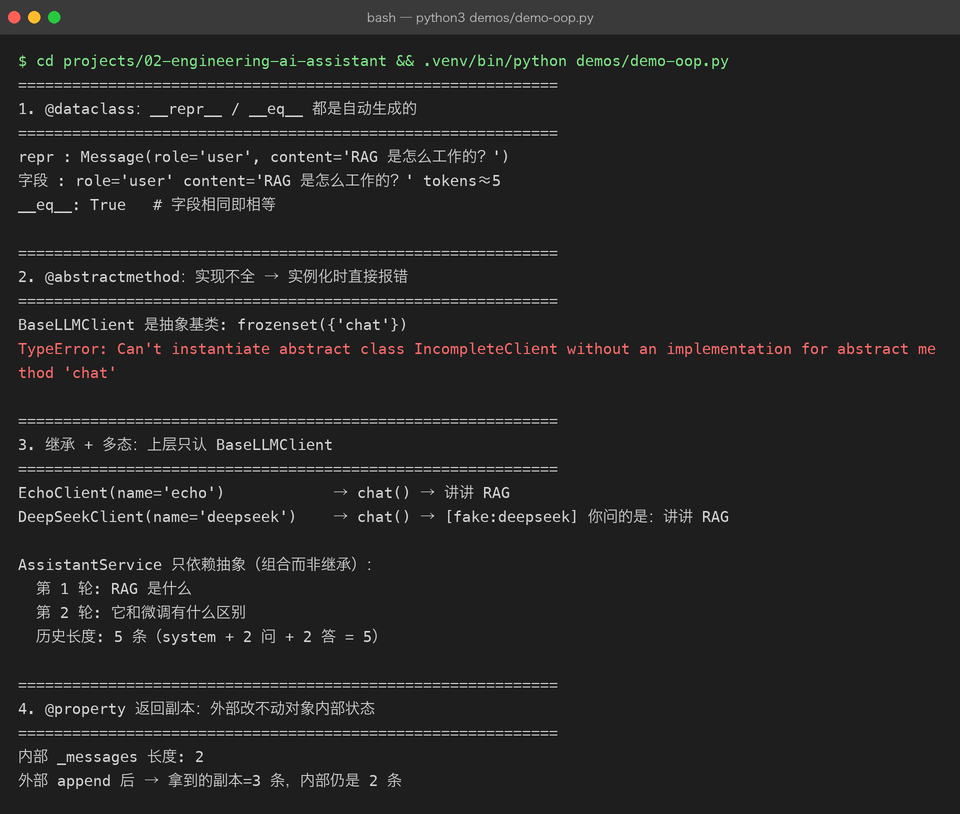
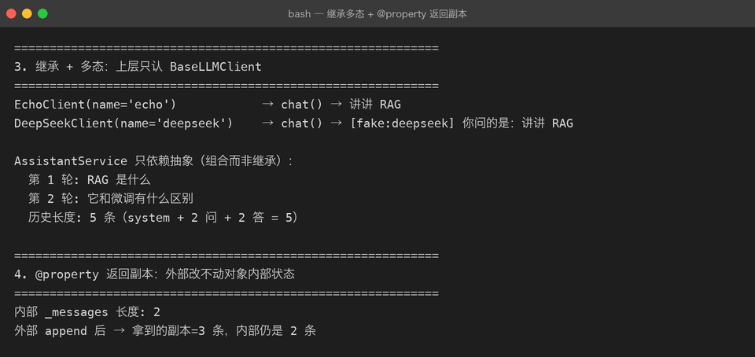

Project 02 — Chapter 00：Classes and OOP【类与面向对象】
状态：✅ 已校对 前置：Project 01 v1.0（已有
LLMClient类） 对应代码：src/assistant/
1. 项目要增加什么能力
Project 01 的 LLMClient 已经是一个类了：
class LLMClient:
def __init__(self, config: Config, system_prompt: str = DEFAULT_SYSTEM_PROMPT) -> None:
self.config = config
self.system_prompt = system_prompt
def ask(self, question: str) -> str:
...但 Project 02 要面对新需求：
需求 1：换成另一个模型厂商（OpenAI / 通义 / 本地 vLLM）怎么办？
需求 2：想给「问答」加一层缓存、重试、日志，代码往哪放？
需求 3：单元测试时，怎么在不联网的情况下测业务逻辑？
需求 4：对话历史谁来管？散落在 main.py 里还是归某个对象？这四个问题的答案都指向同一件事：
用「抽象 + 继承 + 封装」把代码分层，而不是继续往一个类里堆方法。
本章目标：
把「一个类包打天下」重构成「抽象基类 + 具体实现 + 会话对象」的分层结构。
2. 为什么需要这个知识
脚本阶段（Project 01）的代码是按执行顺序组织的：
读配置 → 构造请求 → 发 HTTP → 解析 JSON → 打印工程阶段（Project 02）的代码要按职责组织：
谁负责配置？ → Config / Settings
谁负责发请求？ → LLMClient（可以有多种实现）
谁负责记住对话？ → Conversation
谁负责业务流程？ → AssistantService
谁负责对外接口？ → CLI / FastAPI区别在哪里？脚本关心「怎么做」，工程关心「谁来做」。
而表达「谁来做」的工具，就是类。
3. 核心概念
3.1 class 与 instance【类与实例】
class LLMClient: # 类：图纸
def __init__(self, api_key: str) -> None:
self.api_key = api_key # 实例属性：每个对象各自一份
def ask(self, q: str) -> str:
return f"[{self.api_key[:4]}...] {q}"
a = LLMClient("sk-aaaa") # 实例：按图纸造出来的房子
b = LLMClient("sk-bbbb")Java 对照：
public class LLMClient {
private final String apiKey;
public LLMClient(String apiKey) { this.apiKey = apiKey; }
public String ask(String q) { return "[" + apiKey.substring(0,4) + "...] " + q; }
}3.2 self 到底是什么
self 就是「当前这个对象」，等价于 Java 的 this。
不同点只有一个：Java 的 this 是编译器隐式提供的，Python 必须显式写进第一个参数。
def ask(self, question: str) -> str: # 必须写 self
return self.config.model # 用 self 访问自己的属性调用时不用传它 —— client.ask("你好") 里，Python 会自动把 client 填进 self。
3.3 __init__ 是构造函数
def __init__(self, config: Config) -> None:
self.config = config对应 Java：
public LLMClient(Config config) { this.config = config; }注意：Python 的 __init__ 不是真正的构造函数（真正的是 __new__），它只是「对象创建完之后自动调用的第一个方法」。99% 的场景你只需要 __init__。
3.4 继承：抽出共同点
需求 1 说要支持多家厂商。它们的共同点：
共同点：都有 api_key、都要发 chat 请求、都返回一段文本
不同点：base_url 不同、请求体字段名可能不同、鉴权头格式略有差异共同点放进父类，不同点留给子类：
from abc import ABC, abstractmethod
class BaseLLMClient(ABC): # 抽象基类：不能被实例化
def __init__(self, api_key: str, base_url: str) -> None:
self.api_key = api_key
self.base_url = base_url
@abstractmethod
async def chat(self, messages: list[dict[str, str]]) -> str:
"""子类必须实现这个方法。"""
...
class DeepSeekClient(BaseLLMClient):
async def chat(self, messages: list[dict[str, str]]) -> str:
# DeepSeek 特有的实现
...
class MockClient(BaseLLMClient): # 测试用：不联网
async def chat(self, messages: list[dict[str, str]]) -> str:
return "这是假回答"@abstractmethod 的作用：强制子类实现。如果子类忘了写 chat，实例化时直接报错，而不是等到运行到那一行才崩。
这解决了需求 1 和需求 3：换厂商 = 换一个子类；测试 = 用 MockClient。
3.5 封装：把「状态 + 操作状态的方法」放在一起
需求 4（对话历史谁管）的答案是：新建一个对象专门管。
class Conversation:
def __init__(self, system_prompt: str) -> None:
self._messages: list[dict[str, str]] = [
{"role": "system", "content": system_prompt}
]
def add_user(self, text: str) -> None:
self._messages.append({"role": "user", "content": text})
def add_assistant(self, text: str) -> None:
self._messages.append({"role": "assistant", "content": text})
@property
def messages(self) -> list[dict[str, str]]:
"""只读视图：外部不能绕过方法直接改内部列表。"""
return self._messages.copy()
def clear(self) -> None:
self._messages = self._messages[:1] # 保留 system三个关键点：
- 下划线
_messages表示「内部实现，外部别碰」（约定，不是强制） @property让conv.messages像属性一样读，但背后是方法（可以加逻辑）- 返回
.copy()防止外部拿到引用后偷偷改内部状态
3.6 组合优先于继承
AssistantService 需要 client 和 conversation，但它不是它们的子类，它是「拥有」它们：
class AssistantService:
def __init__(self, client: BaseLLMClient) -> None:
self._client = client # 组合：持有另一个对象
self._conversation = Conversation(...)
async def ask(self, text: str) -> str:
self._conversation.add_user(text)
answer = await self._client.chat(self._conversation.messages)
self._conversation.add_assistant(answer)
return answer这是 Java 里天天在写的依赖注入：AssistantService 不关心传进来的是 DeepSeek 还是 Mock，只关心它实现了 chat。
这也正是后面 Chapter 03 的
Protocol、Chapter 09 的 FastAPIDepends的基础。
4. 项目代码
本章在 src/ 下建立的分层（Chapter 01 会把 chat 改成 async）：
src/assistant/
├── errors.py # 异常层级（P01 已有）
├── config.py # 配置对象（P01 已有，Chapter 05 升级）
├── client.py # BaseLLMClient + DeepSeekClient（本章）
├── conversation.py # Conversation：管对话历史（本章）
└── service.py # AssistantService：业务流程（本章）调用链：
CLI / FastAPI
↓ 调用
AssistantService.ask()
↓ 先记历史
Conversation.add_user()
↓ 再发请求
BaseLLMClient.chat() ← 可以是 DeepSeekClient，也可以是 MockClient上层不依赖下层的具体类型，只依赖抽象。 这就是能测试、能换厂商、能加缓存的原因。


5. Java ↔ Python 对比
| Java | Python | 说明 |
|---|---|---|
class X {} | class X: | 同 |
this.field | self.field | Python 必须显式声明 self 参数 |
public X(...) 构造器 | def __init__(self, ...) | 同类 |
abstract class | class X(ABC) | Python 靠继承 ABC |
abstract 方法 | @abstractmethod | 同 |
extends | class Sub(Base): | 括号里写父类 |
implements | 直接继承（Python 无接口关键字） | 抽象基类 / Protocol 代替 |
super.method() | super().method() | 同 |
private String x | self._x（约定） | Python 没有真正的私有 |
public String getX() | @property def x(self) | 调用方写 obj.x |
final | 无关键字（约定全大写 / frozen dataclass） | 靠自律 |
interface | typing.Protocol | Chapter 03 细讲 |
6. 常见坑
坑 1：可变默认参数
def __init__(self, messages: list = []) -> None: # ❌ 灾难
self.messages = messages[] 在函数定义时就创建了一次，所有实例共享同一个列表。改一个，全都变。
正确写法：
def __init__(self, messages: list | None = None) -> None:
self.messages = messages if messages is not None else []坑 2：类属性被所有实例共享
class Client:
history: list = [] # ❌ 类属性，所有实例共用
a, b = Client(), Client()
a.history.append("hi")
print(b.history) # ['hi'] —— b 也被改了要每个实例独立，就放进 __init__ 里用 self.。
坑 3：忘记 self
class Client:
def ask(self, q):
return config.model # ❌ NameError: name 'config' is not defined实例属性必须 self.config。
坑 4：以为 _x 真的私有
conv._messages.append({"role": "user", "content": "绕过方法"})Python 不会拦你。_x 只是「我和你约定别碰」。要真正保护，用 @property 返回副本（见 3.5）。
坑 5：抽象基类没实现完就想实例化
class MyClient(BaseLLMClient):
pass
MyClient() # TypeError: Can't instantiate abstract class MyClient这是好事——错误提前暴露，而不是运行到一半崩。
7. 实战挑战
挑战 1：写一个 EchoClient(BaseLLMClient)，它的 chat() 把最后一条 user 消息原样返回。用它跑通 AssistantService，验证「换实现不用改上层」。
挑战 2：给 Conversation 加一个 token_estimate() 方法，粗略估算历史长度（len(text) // 2），并在超过 2000 时自动丢弃最早的 user/assistant 对（保留 system）。
挑战 3（进阶）：把 BaseLLMClient 改写成 typing.Protocol（不继承、只声明方法签名），体会「结构化子类型」与「继承」的区别。
8. 主动回忆
遮住答案，看你能不能答出来：
self是谁？调用时为什么不用传？__init__和 Java 构造器有什么本质区别？@abstractmethod解决了什么问题？- 为什么可变默认参数
[]是坑？怎么修？ - 「组合」和「继承」分别在什么场景下用？为什么本项目选组合？
- Python 的
_x私有吗？怎么才算真正的封装？
9. 本节完成标准
- [ ] 能说清
class / self / __init__ / 继承 / 封装各自解决什么问题 - [ ] 实现
BaseLLMClient（抽象基类）+ 至少一个具体子类 - [ ] 实现
Conversation，并用@property暴露只读messages - [ ] 实现
AssistantService，它只依赖抽象，不依赖具体厂商 - [ ] 用
MockClient在不联网的情况下跑通一次完整问答
下一章：01-async-await.md —— 把 chat() 变成异步，解决并发。